Times' Pac-12 Power Rankings
Rank
Team
Previous
1
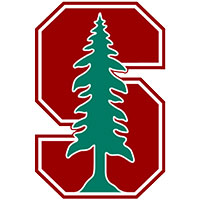
Stanford
Coach David Shaw has hinted Stanford will use more three-receiver formations this season, which is a dramatic shift in philosophy from a program dubbed Tight End U.
-
2

UCLA
Sophomore Josh Rosen is being touted as one of best quarterbacks in the country, but it will be interesting to see how he operates in UCLA's new power-run offense.
-
3
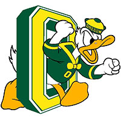
Oregon
A few question marks on the offensive line as the Ducks replace three departing seniors with redshirt freshmen. Plus, LT Tyrell Crosby is hobbled with an ankle injury.
-
4
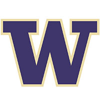
Washington
Washington is 26.5-point favorite over Rutgers. Last time the Huskies were favored by more than 26 against FBS team, they covered 28-point spread and beat Colorado 59-7.
-
5
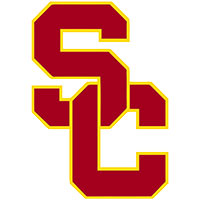
USC
We're going to learn an awfully lot about the Trojans - and particularly first-year starting QB Max Browne - after Saturday's opener against No. 1 ranked and defending national champion Alabama.
-
6
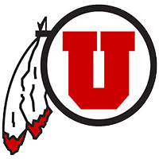
Utah
Utah is 4-0 against FCS teams and has outscored them 194-31 since joining Pac-12, but opening against defending Big Sky champion Southern Utah could prove to be troublesome.
-
7
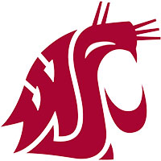
Washington State
WSU averaged 469 yards offense last season and Eastern Washington allowed 476 last year so expect the Cougars, QB Luke Falk and WR Gabe Marks to put up big numbers in Saturday's opener.
-
8
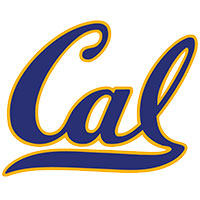
California
Texas Tech transfer QB David Webb (411 yards, 4 TDs) was better than expected in last week's Cal debut - a 51-31 win vs. Hawaii. Coach Sonny Dykes most impressed by a zero-turnover performance in opener.
-
9
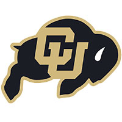
Colorado
Buffaloes start seven seniors and two juniors on offense, which is one reason CU fans think the team will end a nine-year bowl drought. But if QB Sefo Liufau can't stay healthy, then all bets are off.
-
10
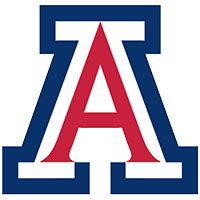
Arizona
Incumbent Anu Solomon and challenger Brandon Dawkins expected to take snaps at QB. Coach Rich Rodriguez wants to play 20-22 players on both sides of the ball in opener.
-
11
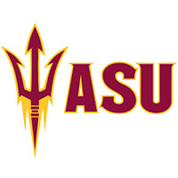
Arizona State
Coach Todd Graham still mum about starting QB, but it won't matter much if inexperienced O-line can't protect him. Sun Devils breaking in four new starters against an upset-minded Northern Arizona team.
-
12
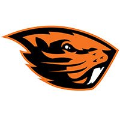
Oregon State
Beavers begin season with the most freshmen (7) in two-deep depth chart than any Pac-12 team, including starting WR Trevon Bradford and backup QB Mason Moran.
-